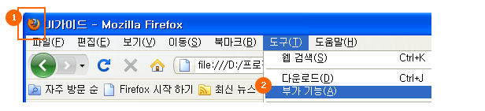
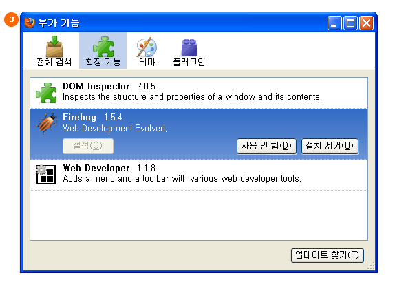
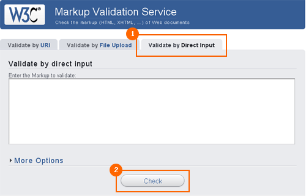
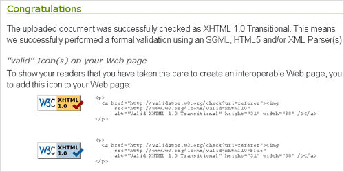

Web Standard
웹표준 기반의 마크업
W3C 표준에 근거한 마크업
표준에 근거한 HTML과 CSS 마크업은 향후 웹 브라우저 호환성을 보장받을 수 있다.
의미에 맞는 HTML 엘리먼트를 사용하여 문서 구조 마크업
웹 문서의 내용을 HTML 엘리먼트의 의미만으로 구조화, 선형화하여 정보를 전달할 수 있다.
따라서 다양한 웹 브라우저와 장치에서 읽을 수 있으며, 화면 크기 등에 따라 디자인 정보를 가진 CSS 파일만 수정하면 One-Source Multi Device가 가능하다.
또한 웹 접근성이 높아져 언제, 어디서, 누구나, 어떤 디바이스, 어떤 응용 프로그램을 이용하더라도 동일한 정보를 제공받을 수 있다.
구조와 표현을 분리하여 마크업
기존에는 구조와 표현이 분리되어 있지 않아서 디자인 정보만 수정하고 싶을 때도 전체를 수정해야 했다.
하지만 웹표준 기반의 마크업에서는 HTML은 문서의 메타데이터 정보를, CSS는 문서의 디자인 정보를 포함하도록 분리되어 있다.
디자인 정보를 수정할 때는 CSS 파일만 수정하면 되므로 유지보수가 한결 쉬워졌다.
또한 HTML 문서의 table 중첩 사용이 없어져 용량이 현저히 줄어들기 때문에, 로딩 시간을 단축할 수 있고 HTML 소스 코드의 재사용성이 높아진다.
준비사항
브라우저 설치
IE8 설치 후 IE6/7/8 모두 사용가능한 IE Tester를 설치한다.
파이어폭스, 구글 크롬, 사파리, 오페라 등 기타 브라우저를 설치한다.
부가기능 설치
부가기능은 IE Developer ToolBar보다는 최적화된 조합인 다음의 파이어폭스용 부가기능을 설치할 것을 권장한다.
1. 파이어폭스 브라우저를 연다.
2. 도구 > 부가기능을 클릭한다.
3. Firebug / Web Developer / Dom Inspector를 각각 검색한 후 다운로드한다.
※ Firebug (단축키 F12) - 디버깅툴로 html구조, CSS, JavaScript 소스를 볼 수 있다.
각 화면 해당 영역의 css와 html 구조를 바로 파악하여 소스를 실시간으로 수정, 적용이 가능하다.
Net 기능을 통해 웹 페이지뿐만 아니라 각각의 객체에 대해서 로딩 속도를 측정할 수 있다.
※ Web Developer - 개발자용으로 다양한 기능의 웹 개발 도구를 제공한다. css 분리 기능, validator 연결기능 등이 있다.
※ DOM Inspector - 개발자용으로 html 문서의 DOM 구조 및 페이지 리소스를 살펴 볼 수 있다.


W3C Validator
http://validator.w3.org
1. 위의 W3C 사이트에 접속한다.
2. Validate by Direct Input 탭을 클릭한 후 체크한다.
URL이나 File Upload보다는 복사한 html을 붙여넣기 하는 것이 가장 정확하고 빠르다.(Ctrl+A -> Ctrl+V)

3. 이후 하단 체크리스트에서 제시하는 Errors 항목을 수정하면서 다음 화면이 나올때까지 Revalidate를 한다.
Tip. 에러 수가 100개로 나오더라도 동일한 유형인 경우 하나만 수정하면 80개로 줄어드는 경우가 있다.
따라서 최상단부터 하나씩 수정한 후 중간중간 Revalidate 하는 게 작업속도를 단축시키는 길이다.
4. 각 브라우저에서 화면이 이상없이 나오는지 크로스브라우징을 확인한다.
